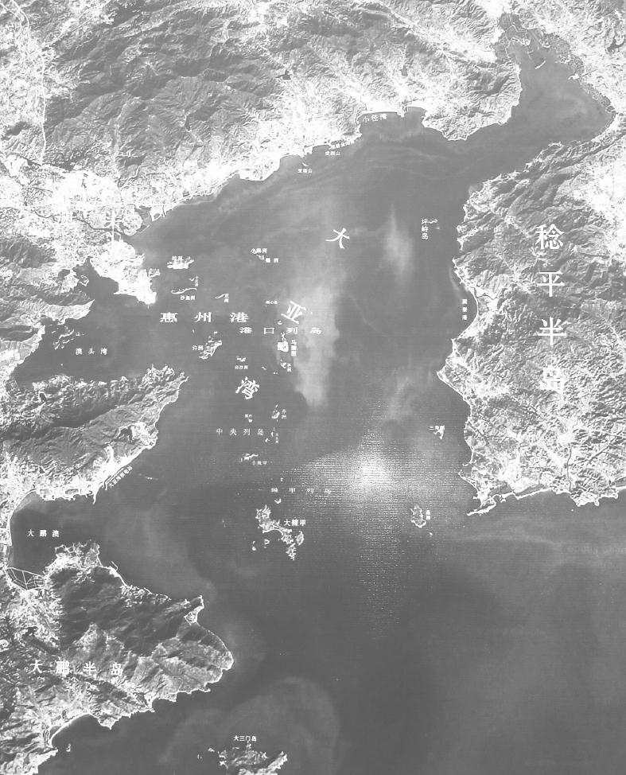

第二十五章 岭南流放
哲宗绍圣元年（一〇九四年）四月，章惇为相，他首先向苏东坡开刀。苏东坡是贬谪到广东高山大庾岭以南的第一个人。他被罢黜，剥夺了官阶，调充英州太守。他并非不知道会有这类情形，不过不知道第二次迫害会严重到什么程度。太皇太后去世后，在往定州就职前，他正式辞行时，皇帝未允谒见，他就觉得危险即将到来了。八年里他曾断断续续教过那个年轻皇帝，对他很了解。一年以前，他曾在一道表章里向小皇帝说得很露骨，倘若他不纳臣子的忠言，苏东坡宁愿做“医卜执技之流，簿书奔走之吏”，也不愿在朝中担任侍读之职。
可是来日如何，他并不真知道。左降英州太守并没有什么特别苦吃。章惇也算他的故交之一。在年轻时他和章惇往陕西山中游历，苏东坡曾戏称章惇将来会杀人不眨眼，不过二人还始终算是朋友。他自己的遭罢黜失官，他倒不以为奇。向朝廷弹劾他的数十条罪名，也是旧有的，而且已经弹劾多次。不外乎是“毁谤先王”，这个罪名是攻击元祐旧臣的陈词滥调。而罪证是在太皇太后摄政期间，他代拟圣旨罢黜王安石一派小人。他代拟一般的圣旨倒无何重要，因为他是奉太皇太后之命行事的。罢黜苏东坡的圣旨如下：若讥朕过失，何所不容，乃代予言，诬诋圣考。乖父子之恩，害君臣之义。在于行路，犹不戴天；顾视士民，复何面目？……虽轼辩足以饰非，言足以惑众，自绝君亲，又将奚憝？
苏东坡现在要跋涉一千五百里，自中国的北部到中国的南部。他觉得他一生只是一站一站地往前走，而现在只是在他人生旅途中的另一步，这旅程是他呱呱落地时已由神灵决定，不过到现在他才充分明白罢了。在他五十七岁时，他已经饱历命运的荣枯盛衰，现在命运的转变，在他也不以为奇了。命中注定他最后要完全与政治断绝关系，要符合他的夙愿，使他去度求之已久的常人生活。他现在向前行进，无忧无惧，心中一片安谧宁静。在过去的日子里，不管遇到何等问题、何等情形，他都以真诚勇敢之态度相向，他愿把一切付诸天命。
苏东坡以第一个牺牲者的身份，横越中国南部巍峨雄伟的山脉，受难之中却有一分卓然不群的优越感。他与家人启程南下。他弟弟子由已然在汝州上任，离国都很近，苏东坡先去看他，在金钱上弄得些接济。苏东坡对理财一事并不见长。虽然在太皇太后摄政九年期间，他走过一段好运，但时常各地调动，俸禄随即花光。另一方面，他弟弟子由宦途较为平稳，直升至宰相之位。苏东坡前去时，子由只能给他七千缗，供他家人在宜兴安居之用。他从子由处回来，发现又官降一等，但到英州的派令并未改变。他给皇帝上了一道使人读之恻然的表章，请求允许乘船南下，作为对老师的一点儿恩宠。他怕陆行一千五百里，会身染重病而死于道侧。所请得蒙恩准，他送全家，包括三个儿媳妇到宜兴的苏家。大家泪眼相望，苏东坡决定只带朝云和两个小儿子同行。
他们到了金陵对岸的仪真，已经是六月天气，迫害元祐儒臣的行动正在雷厉风行，名公巨卿之遭流放者，已有三十余人。苏东坡现在是第三次降官。他已经不够太守的资格，而是改派到广州迤东七十里的惠州充任建昌军司马。情况已完全不同，他决定让次子回宜兴农庄去，自己只携二十二岁的儿子苏过、朝云、另外两个老女仆前往。他的门人张耒这时是镇江太守，派遣了两个老兵一路伺候他。
但是沿途穿过美丽的乡野，经过高山深谷，看动人心神的急流高山，苏东坡都充分观赏。他坐的是一只官船，在九江以南鄱阳湖停泊时，出乎他意料，第四道命令又来到，又把他贬低官阶。运输官听到这条命令，派一队兵来要将船收回。兵来到时正是半夜。苏东坡与军官商妥，许他在船上住到次日中午。这时离通往南昌的湖上码头还有十二里。他若运气好，明天午前能到南昌，就安全无事；若遇逆风，他和全家以及行李就只好被抛下船来。他到龙王庙去祷告，因为龙王是主管水上安全的。他向龙王陈明他如今身陷困难，他说明天早晨若到不了目的地，便须露宿野外了。他刚一祷告完毕，一阵强风吹来，船帆涨满，船向前行走极快，还不到吃早饭时间，船就到达了。后来，在他回程时，他写了一篇祭文，向龙王道谢。
梅岭古驿道 摄影 现代
大庾岭又称梅岭，在古代，岭北归属于比较发达的汉族文化区域，南面则是古代南蛮族居住的土地。岭南也是历史上著名的贬官发配之处。苏东坡在被贬谪岭南经过此地时曾题赋过一首著名的梅花诗《赠岭上梅》：“梅花开尽百花开，过尽行人君不来。不趁青梅尝煮酒，要看细雨熟黄梅。”
在九月，他跨越有名的大庾岭，大庾岭在中国古代为赴广州的旅客必经之地。这道关隘是一条遥远、危险的旅途，通过之后，便到了另一个境界，多少旅客往往是有去无回的。一条铺石头的路，在关隘两侧各有三四百码长，道旁有浓荫茂密的树，为旅客遮蔽太阳，供旅客歇息。行人到此，不由喟然兴叹，多在岩石上题诗寄慨。立在此处山峰上，头上云天，不过咫尺，苏东坡觉得自己犹如梦游，不复知自己肉体之躯在何处所了。从那样高处，他能看到人的渺小，行为的卑鄙，山上的清风把他胸中的尘思俗念一扫而空。横过了关隘之后，他游历今日的曲江和南华寺，中国佛教禅宗的圣地。
在曲江和广州之间，他碰见道士老友吴复古。从此之后，在苏东坡流放期间，他一直与吴复古交往很密切。吴复古是一怪人。在过去那些年，在苏东坡的生活里，他曾在不同的处所突然出现。苏东坡第一次遇见他，是在济南，后来又在京城碰见他。此人从事何种活动呢？难道他没有职业？他何以为生？他与苏东坡要好，难道是有所求取，特别是等到苏东坡在朝得势之时吗？可是他向苏东坡从无所求，也不曾求苏东坡为他转求他人。过去不知他流落何方，而现在又忽而相遇，不在别的地方，偏偏在此，苏东坡又遇到他。吴复古是真正的道士，身体精神，轻松自在，一心无忧无虑，这是道家极其重视的，由于身体强，欲望少，他们大多能过一种为人所艳羡的自由自在的生活。要获得此种自由自在的生活，必须摆脱名利，吃粗茶淡饭，穿衣住处不讲究，步行千里，睡在旷野，不视为苦事。吴复古对此世界一无所求。他时隐时现，等于随时提醒苏东坡，倘若他不为政治所纠缠，他就过那种飘荡不羁的日子。
哲宗绍圣元年（一〇九四年）十月二日，是欧洲第一次十字军东征的前两年，苏东坡到了惠州。他对好多事都显得新奇，可是又似乎熟悉。广东是亚热带，他看见橘林、甘蔗、荔枝树、香蕉园，还有槟榔树。绝不是个不适于生活的地方。有两条河自北流入，在城东汇合。前半个月，苏东坡在地方太守礼遇之下，住在政府官舍中。他立在两河汇合处的合江楼上，看见宽广的河流在下面城边流过，对岸归善县的县城就建筑在陡斜的山坡上。沿河是岩石和巨大的石卵，闲散的人正在那儿钓鱼。城的正北就是罗浮山和象头山，他知道以后他会去览奇探胜的。
这里就是中国的南方，和他以前所想象的不一样，处处是浓绿的草木和亚热带的水果，的确是“岭南万户皆春色”。当地百姓看见苏东坡这位诗人都觉得惊讶，不知他为何故被贬谪到他们这个地区来。苏东坡想到苏武，苏武被匈奴单于流放到漠北，从没料到在暮年还能回到中国；他又想到管宁流放到辽东，竟愿居住在那里终生不去。惠州很美，当地居民也对他很好。等后来他迁到对岸的嘉祐寺之后，他说不久“鸡犬识东坡”了。在对岸松风亭里他写了一封短笺，把他对人生的态度表现得最好。搬到嘉祐寺之后，他常在山顶的松风亭里流连不去。一天，他正回家时，看见松风亭高高超出树顶之上，他的两条老年的腿感觉到疲倦。他忽然想：“此间有什么歇不得处？由是心若挂钩之鱼，忽得解脱。若人悟此，当恁么时也不妨熟歇。”
如今他又恢复到“依然故我”了。在广州之时，他买了些上好的檀香，现在喜欢闭门静坐，细闻此香味，思想往日过错。有时窗外凉风徐来，他下午酣睡，等屋顶一只乌鸦把他唤醒，忽然觉得自己已然无官一身轻。看见宽阔的河面反光，映入书斋，他心想，这与明月在天一样好。他不懂为什么有人以为天空有云、有月光会更美。他以为天空无云，正如一尘不染的良心。
他给朋友写信说：来此半年，已服水土，一心无挂虑，因为已经乐天知命。黄州老朋友陈慥写信说想来探望，由汉口到惠州有一千里之遥。苏东坡绍圣二年（一〇九五年）三月四日给他回信说：
到惠将半年，风土食物不恶，吏民相待甚厚。孔子云“虽蛮貊之邦行矣”，岂欺我哉！……自失官后，便觉三山跬步，云汉咫尺，此未易遽言也。所以云云者，欲季常安心家居，勿轻出入。老劣不烦过虑，……亦莫遣人来，彼此须髯如戟，莫作儿女态也。……长子迈做吏，颇有父风。二子作诗骚殊胜，咄咄皆有跨灶之兴，想季常读此，捧腹绝倒也。今日游白水佛迹山，山上布水悬三十仞，雷轰电散，未易名状，大略如项羽破章邯时也。自山中归，得来书，灯下裁答，信笔而书，纸尽乃已。
他外在的生活绝不寂寞。可以意料得到，所有邻近地区的官员都利用此一难得的机会来与这位杰出的诗人相结交。惠州东、西、北三面，计有五地区的太守，不断给他送酒送食物。惠州太守詹范和博罗县令林抃变成了他最亲密的朋友。其他至交，如杭州僧人参寥、常州的钱世雄，不断派人带礼品、药物、书信来探望。苏州有一个姓卓的佛教徒，步行七百里替太湖地区苏家与那里的朋友来送信。苏东坡在宜兴的两个儿子老不曾听到父亲消息，十分焦虑，姓卓的听到，他说：“这个容易！惠州也不是在天上，是不是？若是走着去，总可以找得到。”姓卓的便步行出发，走上这条漫长的道路，横越大庾岭，走得满脸紫赯色，两脚厚茧皮，他走到了。
用这种方法，苏东坡不断与家庭保持联络。道教奇人吴复古和他同住数月，随后两年，在惠州和子由官职所在的高安时常往返。另一个苏东坡的同乡道士陆惟忠不辞两千里之遥，特意来看他。苏东坡发现了一种极不寻常的酒——“桂酒”，他说桂酒不啻是仙露。他给陆惟忠写信开玩笑说桂酒一端即足以抵他迢迢千里跋涉之劳，而陆惟忠果然来了。每过几天，太守詹范就派他的厨子带着菜到苏东坡家来。过几天，苏东坡就邀朋友到城西湖边喝几杯。那片湖位于山麓，旁边有一个大佛塔、两个庙。有时他去钓鱼，一直坐在岸边一块巨大的卵石上。一天，他钓到一条大鳗鱼，带着鳗鱼和酒到太守家去，在那里吃饭。苏东坡常去游白水山，有时他带着一个儿子，有时和本地太守或新来到城中的朋友一起。
他给弟弟子由的信，其中有几封读之可喜。在一封信里他谈到他临时发明的烤羊脊。
惠州市井寥落，然犹日杀一羊，不敢与仕者争。买时嘱屠者，买其脊骨耳。骨间亦有微肉，熟煮热漉出，渍酒中，点薄盐炙微燋食之。终日抉剔，得铢两于肯綮之间，意甚喜之。如食蟹螯，率数日辄一食，甚觉有补。子由三年食堂庖，所食刍豢，没齿而不得骨，岂复知此味乎？戏书此纸遗之，虽戏语，实可施用也。然此说行，则众狗不悦矣。
到了惠州，苏东坡最大的发现是此地无酒类的官方专卖，每家各有家酿。由此时起，他开始品尝桂酒，这时他仿佛在遥远的地方遇到了知己。在给朋友的好多信里，他赞美此酒的异香。此种酒微微带甜而不上头，能益气补神，使人容颜焕发。在一首诗里苏东坡盛夸此酒，如果此种酒能开怀畅饮，会感到浑身轻灵飘逸，可飞行空中而不沉，步行水面而不溺。他打听到桂酒的酿造法，刻在石头上，藏在罗浮铁桥之下，只有寻神求仙的人才能寻到。
惠州卫星图 摄影 现代
惠州市位于广东省东南部，珠江三角洲东北端，南临大亚湾。惠州是广东省的历史文化名城，在古代即有“岭南名郡”之称，简称鹅城。不过，有后人戏称，是唐以来千多年间的诸多贬官成就了这里。这些人中又以苏东坡的到来而更让这里闻名遐迩。
苏东坡写了至少有五六篇酒赋。最有趣的是《书东皋子传后》。东部某太守以酒相赠。他刚刚读完汉代（实为唐代——编者注）以酒量之大出名的东皋子传记。在他谢太守赠酒的信里，他写了又启，叙述他饮酒的习惯，顺带添写了两条人生“至乐”——不高明的作家必然会增加到四五条，或写个没完了。
予饮酒终日，不过五合，天下之不能饮，无在予下者。然喜人饮酒，见客举杯徐引，则予胸中为之浩浩焉，落落焉，酣适之味，乃过于客。闲居未尝一日无客，客至未尝不置酒。天下之好饮，亦无在予上者。
常以谓人之至乐，莫若身无病而心无忧，我则无是二者矣。然人之有是者，接于予前，则予安得全其乐乎？故所至，常蓄善药，有求者则与之，而尤喜酿酒以饮客。或曰：“子无病而多蓄药，不饮而多酿酒，劳己以为人，何也？”予笑曰：“病者得药，吾为之体轻；饮者困于酒，吾为之酣适。盖专以自为也。”
东皋子待诏门下省，日给酒三升。其弟静问曰：“待诏乐乎？”曰：“待诏何所乐？但美酝三升，殊可恋耳。”今岭南法不禁酒，予既得自酿，月用米一斛，得酒六斗。而南雄、广、惠、循、梅五太守，间复以酒遗予。略计其所获，殆过于东皋子矣。然东皋子自谓五斗先生，则日给三升，救口不暇，安能及客乎？若予者，乃日有二升五合，入野人、道士腹中矣。东皋子与仲长子光游，好养性服食，预刻死日，自为墓志。予盖友其人于千载，或庶几焉。
苏东坡写过一篇酒颂。即便不解杯中趣的人，读了他描写陶然微醉的快乐，也会为之神往的。
浊醪有妙理赋
酒勿嫌浊，人当取醇。失忧心于昨梦，信妙理之疑神。……伊人之生，以酒为命。常因既醉之适，方识此心之正。稻米无知，岂解穷理；曲糵有毒，安能发性。乃知神物之自然，盖与天工而相并。得时行道，我则师齐相之饮醇；远害全身，我则学徐公之中圣。湛若秋露，穆如春风。疑宿云之解驳，漏朝日之暾红。初体粟之失去，旋眼花之扫空。……兀尔坐忘，浩然天纵。如如不动而体无碍，了了常知而心不用。坐中客满，唯忧百榼之空；身后名轻，但觉一杯之重。今夫明月之珠，不可以襦；夜光之璧，不可以 。刍豢饱我而不我觉，布帛燠我而不我娱。唯此君独游万物之表，盖天下不可一日而无。在醉常醒，孰是狂人之药；得意忘味，始知至道之腴。
苏东坡不但是酒的鉴赏家和试验者，他还自己造酒喝。他在定州短短一段时期，曾试做橘子酒和松酒，甜而微苦。在他写的《中山松醪赋》里，他曾提到松脂的蒸馏法，但是如何制酒却未明言。在惠州他造了桂酒，而且生平第一次品尝中国南方的特产“酒子”。酒子是在米酒还未曾充分发酵时取出来的，所以其中酒精成分甚少，实际上有些像稍带酸味的啤酒。有一次，在一首诗前的小序中他说他一面滤酒，一面喝个不停，直到醉得不省人事。在给朋友的一封信里，他说了“真一酒”的做法。这种酒是白面粉、糯米、清冽的泉水这神圣的三一体之精华，做成之后，酒色如玉。上等面粉掺发酵粉，揉成面曲饼，挂起来干两个月；然后煮上一斗米，在取出之后用水冲净，晾干；再拿三两曲饼，轧成细粉，与米和匀放入瓮中，压挤极紧，中间留一圆锥形小坑，在中间低处流出酒液时，把刚才留下的一部分曲粉洒在中间低处。等酒液已经够多，把压紧的米切开，放入新煮好的米，其比例为一斗旧米加入三升新米，再加进两碗开水，过了大约三天到五天，便酿成了六升的好酒。但是时间的长短，也要看天气如何而定。在热天，酵母要减少半两。
说公道话，苏东坡在做酒方面只是个外行中的内行，而不是个真正内行。做酒只是他的业余嗜好而已。在他去世之后，过和迈两个儿子常被人问到他父亲做各种酒的方法，尤其是在苏东坡诗和书信中常提到的桂酒。两个儿子都大笑。苏过说：“先父只是喜欢试验罢了，他只试过一两次。桂酒尝来犹如屠苏酒。”苏东坡大概是太性急，不能锲而不舍研究个透彻。据说尝过他在黄州做的蜜酒的人，都有几次腹泻。
在哲宗绍圣二年（一〇九五年）四月十九日，他的堂妹去世。真是不幸，她的名字始终未能传下来，苏东坡只是称她“堂妹”，或“小二娘”。她丈夫写给苏东坡的信报告这个噩耗，竟走了三个月。苏东坡对堂妹的钟爱并未少减，这一点在几年前他写信给一个亲戚可以证明，因为那封信里他说一次旅行时未能到常州去看她，始终引以为憾。去年她与丈夫显然是迁到苏东坡为官的定州去居住。她丈夫柳仲远是一个方正的贫儒，并未考中科举，但甚喜收藏字画。苏东坡在京都时，他曾去拜望苏东坡，苏东坡曾以书画相赠。苏东坡在给程之才的信里，提到堂妹的死讯，说自己“情怀割裂”，在给堂妹的儿子的信里，也说“此心如割”。用这类说法表示伤怀，在中文里虽非什么特殊，但所表示的仍是很深的伤怀。
他为堂妹写的祭文，显然是得到噩耗之后写的，这篇祭文颇有真诚感触，显示出一往情深之致。文中说，他祖父的孙辈只有四个尚在。那四个是东坡、子由、子安（他伯父之子，在家乡为弟兄们照料祖茔），另一个便是这位堂妹。说她“慈孝温文，事姑如母，敬夫如宾”。随后谈到私人的感受。他盼她的两个儿子能长大成人，能够光耀门楣。祭文上说：“一秀不实，何辜于神。谓当百年，观此腾振。云何俯仰，一嚬再呻。救药靡及，奄为空云。万里海涯，百日赴闻。拊棺何在，梦泪濡茵。长号北风，寓此一樽。”一年之后，她丈夫也去世，灵柩南运至镇江附近的老家安葬。
苏东坡到惠州不久，得到一个消息，颇使他心中焦虑。在过去四十二年中，自从他姐姐去世，他父亲公开指责他内兄家之后，他和弟弟子由就一直没和姐夫程之才通信或交谈，但和程家其他弟兄有书信来往。章惇听到这件亲家嫌隙，他就特派程之才专程南下担任提刑，处理重大诉讼和上诉的案件。在哲宗绍圣二年（一〇九五年）正月，他到了广州，是苏东坡到惠州的三四个月之后，苏东坡摸不清楚程之才究竟是否已把过去的事置诸脑后，所以完全不知道会有何等情况发生。由于一个朋友的关系，苏东坡给程之才写了一封客气礼貌的信，因而知道程之才要在三月到惠州。确知他别无他意之后，苏东坡派儿子过在他来时去接他，并且带着一封欢迎信，自称：“杜门自屏，省躬念咎。”程之才此时已然年老，年约六十岁。事实是程之才颇想弥补过去的嫌隙，重获此一门贵亲的友谊。他向苏东坡恳求为他曾祖父（苏东坡的外曾祖父）写一篇墓志铭。也许是亲戚毕竟是亲戚，也许是眉山城皆以苏东坡此位大文豪为荣，而程之才也颇有此荣誉感。于是双方的关系又显得真正亲热起来，由双方交换很多信件诗文，苏东坡也对他有所请求。在惠州过了十天，程之才又出发视察，不过那一年大部分时光他在广州附近度过。
有程之才在，并且凭借他的友情，苏东坡得以对地方颇有建树。虽然苏东坡已无权副署好多公文，可是他却充分利用他对程之才的影响力。他对朝廷高层政治固然是已告断绝，可是对邻人和当地百姓的福利，他还是视为己任。倘若有什么事非法越理，他若能运用势力予以纠正，他不会坐视不顾。绍圣三年正月初一，博罗大火，使苏东坡大为震惊。全城付之一炬。他请程之才通令地方官对无家可归的百姓予以救济，临时搭建篷帐供灾民居住，并严防抢劫。官家衙署完全焚毁，全需重建。苏东坡恐怕那些官衙的积弊恶习又要发生。他怕官方在重建此一城镇时，又要乘机剥削人民，而地方政府会征用物资、民工。他建议程之才令当地政府在市场公开购买，禁止征集民间物资，征用民工。他指出来，否则“害民又甚于火矣”。
他站在惠州街上，看到使他十分痛心的事。看见农夫满车装着谷子去向当地政府缴纳捐税。因为丰收，谷价下跌，政府拒绝收取谷子。这正是苏东坡要管的事。他一探询，才知道政府要的是现款，因为谷价太低。农民必须在低价市场将谷子卖出，才能得到现款，可是农民需要缴纳的捐税现款却按粮价高时计算。结果，农民欠一斗粮税，却得卖两斗谷子才够缴纳。苏东坡给程之才写了一封长信，内容雄辩滔滔，言辞峻切，就仿佛以前上太皇太后的表章一样，这样把此衙署积弊揭发无遗，指为向农民纯然勒索。他请程之才和当地的税吏及运输官举行一次会议，并建议当地政府当依谷物市价向农民征税。数月之后，他听说那三位官员已经决定向朝廷联合呈请，他十分高兴。
他现在开始关心惠州城的诸种改善革新事宜。他还是一秉过去喜爱建设的天性，经过与程之才、几位太守与县令会商，建筑了两座桥，一个在河上，一个在惠州湖上。为兴建这两座桥，子由的太太捐出不少朝廷当年赏赐她的金币。在忙于进行这项工程时，他又做了另外一件事，特别受地方居民的敬仰，就是把无主野坟的骸骨重建一大冢埋葬之。重新安葬之后，他写了一篇祭文，安慰那些无名死者。他相信，那些死者不是平民，便是兵卒。他颇以那些骸骨有些残缺不完，必须合葬为歉，只希望那些阴魂和睦相处，犹如一个大家庭一样。他又在城西修了一座放生池。这纯然是佛教思想，其基本观念是轮回思想，相信那些鱼也许前身是人身。鱼类一放入此放生池内，则生命安全无虞。那个池塘即名为“苏东坡放生池”，直到清末，当地士绅百姓，还保持在节庆之日，去买鱼放生的风俗。他常对做些小事感兴趣。一件新奇的东西在十几年之前很使他着迷——那时他正贬谪在黄州——那件东西叫作“秧马”，是插秧用的。插秧是累得腰酸腿疼的事，农夫必须在水田中涉水而行，整天弯着腰肢劳作。秧马就像在水面漂浮的一只小船，农人可以坐在上面插秧，用腿当作桨移动，马头正好用来盛稻秧。这种东西既可使工作进行快速，又可以节省劳力。他想把这种东西向南方推广应用。他对此事非常热心，在给朋友的信里他多次提到。他给一位官吏送行时，曾经告说他要推广秧马的应用，并且说，为官成功之道，在于“吏畏民爱”。
苏东坡既已失去权力地位，又为当政者所不喜，壮年时致君于尧舜与改变帝国之命运等雄心壮志，已不复当年气概。如今只是惠州一国民而已，他的事也就是邻居翟秀才和林太太的事，这位林太太是酿酒的，总是赊给他酒喝。他的朋友是道士吴复古、陆惟忠和罗浮的僧人。他在学者、太守、县令之中，也有不少朋友。
他虽然不能做官，还可以做个热心公益的国民。广州为广东之省会，近在咫尺，太守王古也是他的朋友。苏东坡因为知道广州有瘟疫流行，就写信给王古，提议筹备一笔基金，做创立公家医院之用，就和以前他在杭州所办的一样。广州人和杭州人一样，也是以饮水问题为苦，疾病易于流行也与此有关。他认识一个道士，那个道士有一套引山泉入广州城的完整计划。广州城内有一口好井，只能供官家用。不过，广州城七里之外，在一个比广州城高很多的地方，有很好的泉水。苏东坡把那个道士的引水计划向王古提出，并且建议建设水管引泉水进城。水管可用大竹管做，此种大竹子在广东东部生产甚多。在山泉所在地需要建一石头水库，用五根大竹管从此水库引水到广州城中另一石头水库。苏东坡对水管的制造说明得十分详细，因为他在故乡曾经见过。竹管接口处用麻缚紧，外面涂上厚漆，以防漏水。每一段竹管要开一小口，以竹针堵塞，倘竹管之中有闭塞不通，便打开此小口检查。他估计约有一万根大竹管便可敷用。但是这些大竹管必须时常检查，也要按期换新，就如同现代铁道的枕木一样。必须有官吏时常视察，每年必须从广东东部采购此种大竹筒备用。他怕给他朋友招不必要的麻烦，告诉王太守切莫让人知道是他出的主意，因为当权派对他厌恶，但是王太守后来却因“妄赈饥民”之罪而被革职。